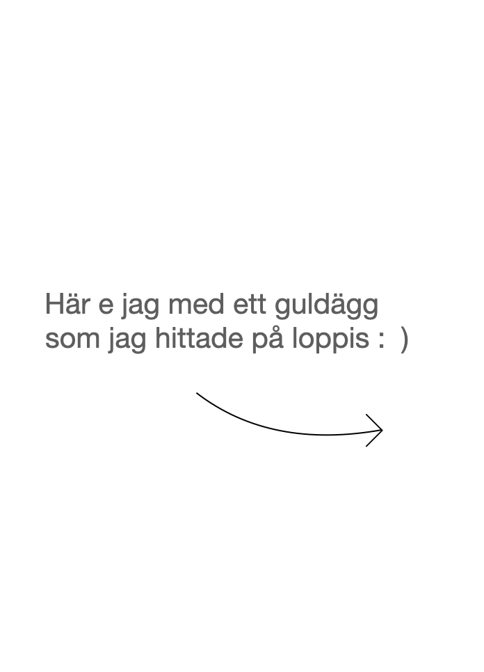

Är från Göteborg. Lärde mig att man äter rårakor med löjrom och grejer när jag kom till Stockholm. Alltid ätit det med rårörda lingon och ovispad vispgrädde tidigare (tips!).
Stavar sjyst "sjyst" och inte schyst. En av mina svagheter som copywriter har jag fått veta. Bestämde mig under en svag stund för att lära mig koda. Därav ser denna hemsida ut som den ser ut.
Granntanten knackade på en dag och sa "kärringarna i huset gillar dig". Strävar efter att leva upp till det.